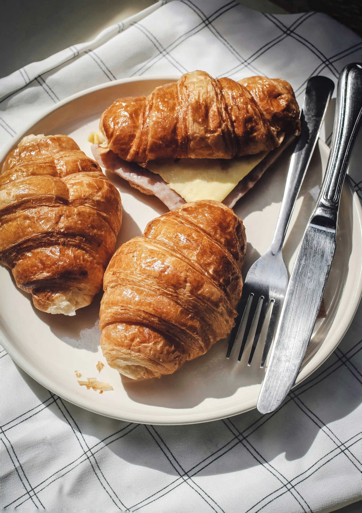
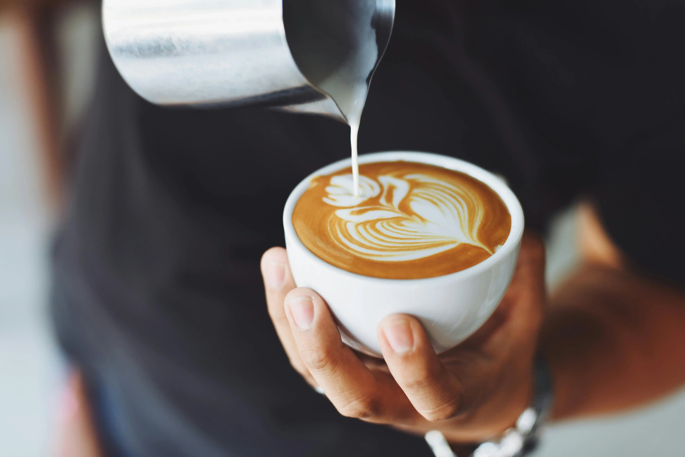
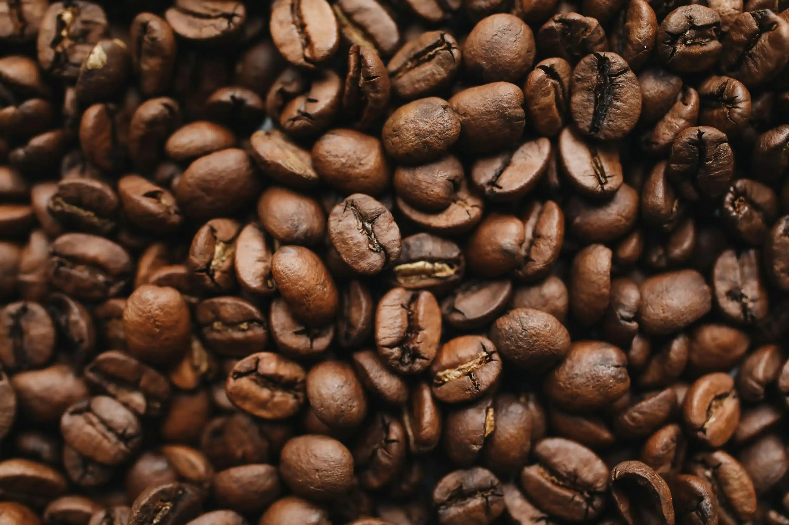

Welcome to City Cafe, your cozy neighborhood spot for the best coffee and pastries in the heart of the city. Founded with a passion for quality and community, City Cafe has been serving locals and visitors alike with freshly brewed coffee and homemade pastries since day one.
We believe that a great cafe is more than just a place to grab a quick coffee. It's a community space where people can connect, create, and feel welcome. Our mission is to provide exceptional coffee, delicious pastries, and a warm atmosphere that makes every visit special.
We are committed to quality from bean to cup. We use locally sourced, ethically-sourced coffee beans that are carefully selected and roasted to perfection. Our pastries are baked fresh every morning using premium ingredients and traditional recipes that have been perfected over years.

Enjoy our daily selection of croissants, muffins, and more, baked every morning with love and care.

From classic espresso to creative lattes, our skilled baristas craft every cup with precision and passion.

A cozy space perfect for working, relaxing, or catching up with friends and family.
Address: Giza, 6 October - El Hussary Square
Opening Hours: Monday–Friday 8am–10pm, Saturday–Sunday 9am–11pm
Visit us today and experience the City Cafe difference!